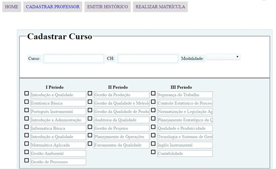
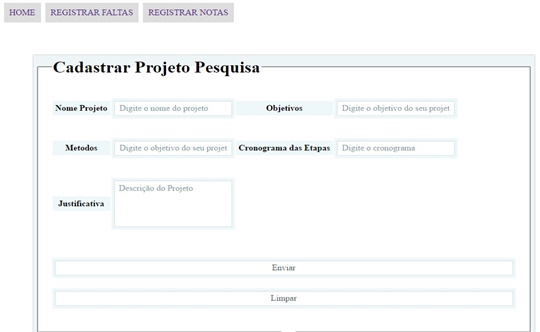

Clique sobre as áreas destacadas em vermelho

Curso: Adicione o nome do curso a ser cadastrado no sistema.
CH: Carga Horária que o curso cadastrado deverá ter.
Modalidade: Qual o nível de ensino do curso cadastrado.
Na imagem, mostra apenas 3(três) períodos, porém o SGA tem capacidade maior do que o exemplo.
A lista oferece campos de preenchimento manual acompanhado de lista em checkbox.
Lista chekbox ajuda no caso de aquela disciplina no "momento" não puder ser oferecido.
Simples e prático, vamos lá:
Preencha os campos, com as informações principais do projeto.
